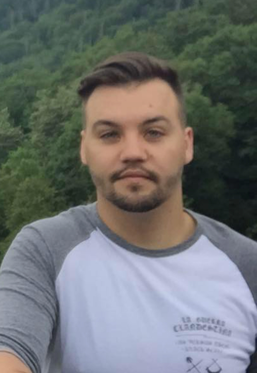

About Me

Hi my name is Jason Vermaak. I am turning 25 this year and decided that I need to change up my life for the better so I can have a more fulfulling future. From changing my career path to my a daily life style and I want to mix everything up. I have been studing general business in school for 4 years and have have never felt happy. Stumbling around different programs around UCF I found a coding bootcamp and once I read what it intailed I was all in. From website design to creating apps I loved reading all the different and completive things I could be learning.
Aside from this new career path playing sports and being active are key things that make me happy. I can talk and play basketball every second of the day, football is a close second though. I was born in South Africa and moved to the United States when I was 7 so I had to learn all the "American sports" alittle later than all the other kids, this didn't stop me from wanting to be the best! Sports in South Africa were very similar but very different from Rugby to cricket, field hockey and hand ball. I picked most sports pretty quickly but to this day cannot hit a base ball to save my life.